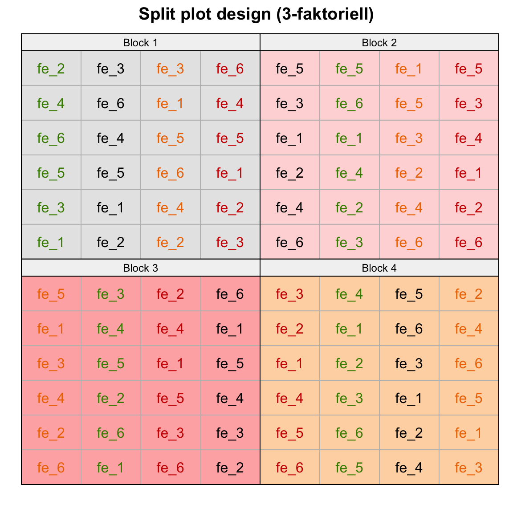
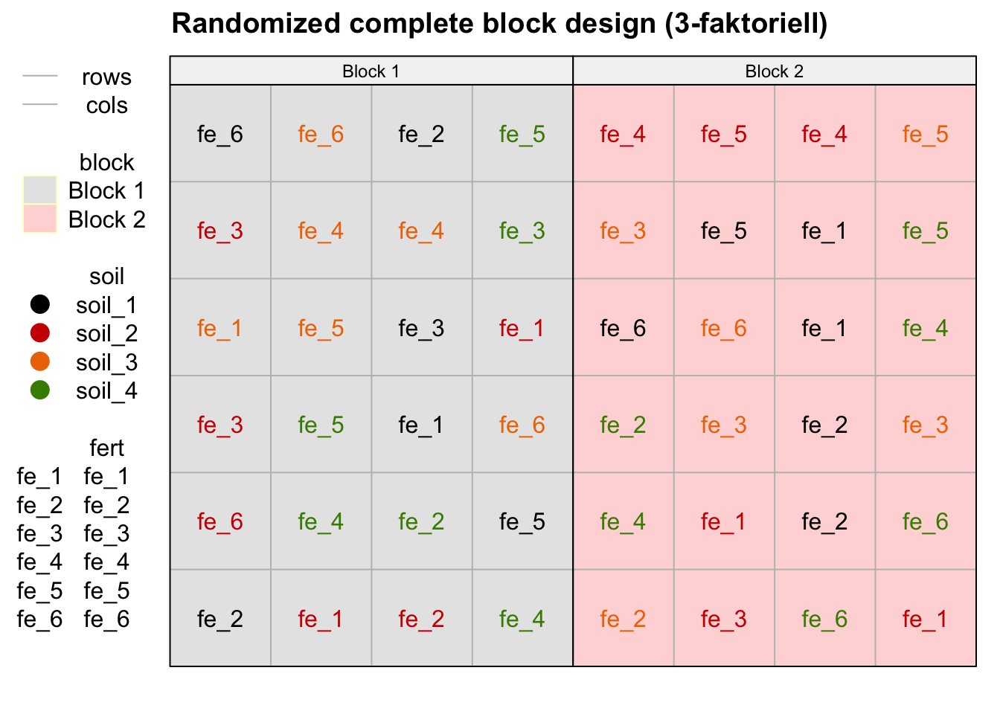
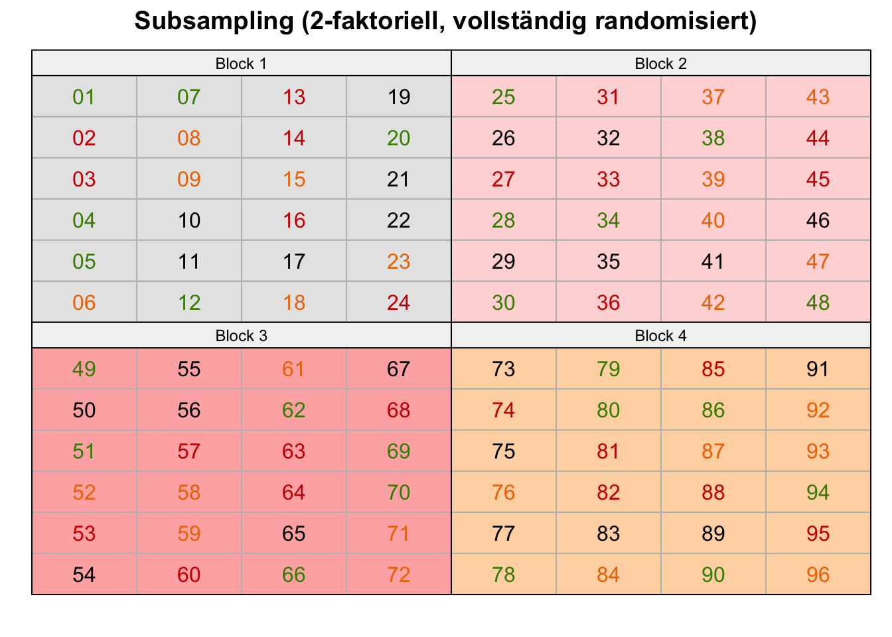
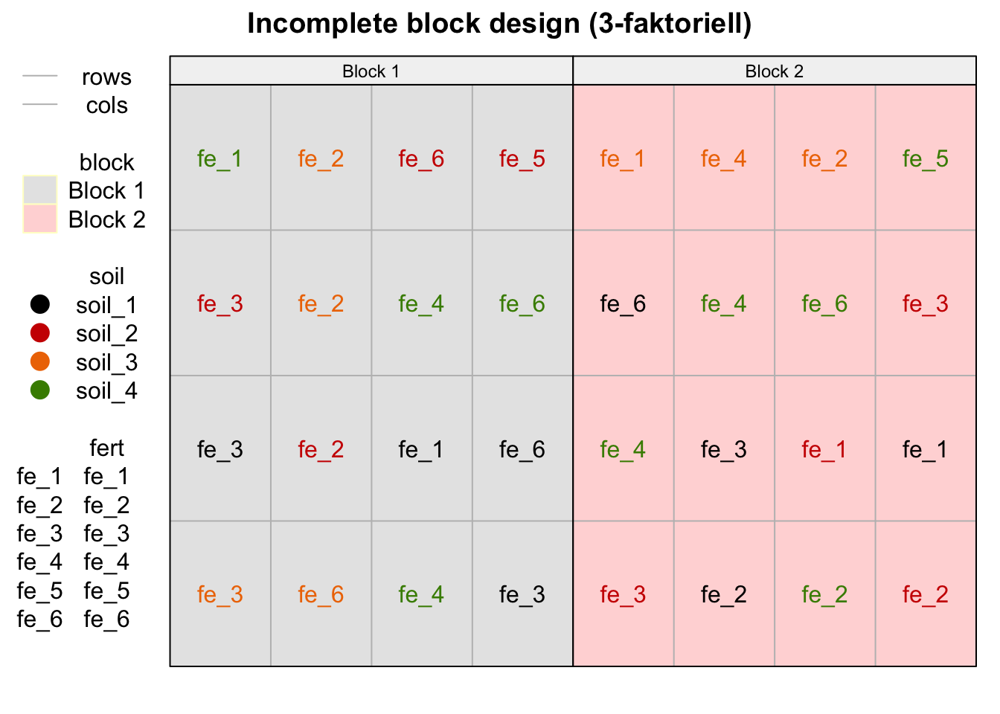
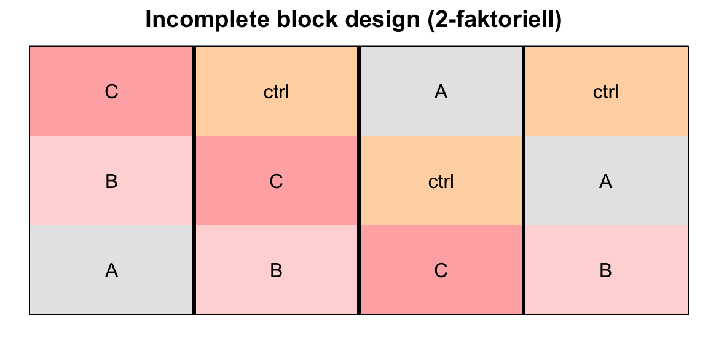
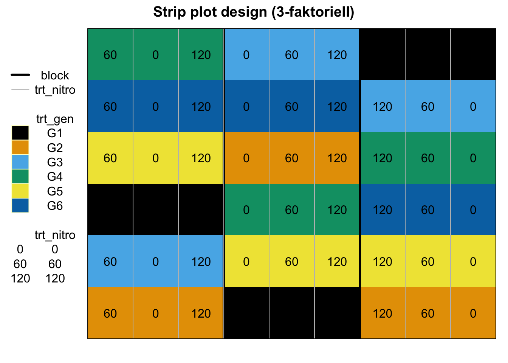

pacman::p_load(tidyverse, magrittr, agricolae, dae, desplot,
conflicted)
conflict_prefer("select", "dplyr")
conflict_prefer("filter", "dplyr")
conflict_prefer("mutate", "dplyr")
conflict_prefer("set_names", "magrittr")
cbbPalette <- c("#999999", "#E69F00", "#56B4E9", "#009E73",
"#F0E442", "#0072B2", "#D55E00", "#CC79A7")57 Fortgeschrittene Designs
Version vom August 18, 2023 um 08:28:32

Auf ein Wort zum Umfang des Kapitels
Ich werde mich in diesem Kapitel für das Erste auf die wichtigen experimentellen Design beschränken. Wenn sich aus deer Lehre oder Beratungstätigkeit noch Bedarf an weiteren experimentellen Designs ergibt, werde ich die Designs entsprechend ergänzen. Insbesondere hier gilt, dass DSFAIR einen sehr umfangreichen Überblick liefert.
Wenn dir ein experimentelles Design fehlt, dann schreibe mir gerne eine Mail und ich schaue, dass ich das experimentelle Design ergänze.
Siehe dazu auch das Inhaltsverzeichnis von dem R Paket agricolae mit Experimental Designs with agricolae einmal genauer an. Auch ist es sehr hilfreich sich Datenbeispiele auf agridat - Datensätze mit Abbildungen in desplot anzuschauen.
In diesem Kapitel wollen wir uns mit der Erstellung von komplexeren experimentellen Designs beschäftigen.
- Randomized complete block design (RCBD, 3-faktoriell)
- Split plot design (3-faktoriell) oder Spaltanlage
- Subsampling
- Incomplete block design (3-faktoriell und 2-faktoriell)
- Strip plot design (3-faktoriell) oder Streifenanlage
Dabei ist zu Bedenkne, dass diese Designs sehr viel Aufwand in der Anlegen der Anlage sowie der praktischen Auswertung auf dem Feld bedürfen. Hier musst du dich dann nochmal beraten lassen, bevor du mit einem Experiment startest. Wir schauen uns jetzt aber erstmal einen Überblick über die gängigsten komplexeren experimentellen Designs an.
In der Abbildung 57.1 sehen wir einmal die Übersicht über die drei häufigsten komplexeren experimentellen Designs mit dem RCBD (3-faktoriell), dem Split plot Design (3-faktoriell) sowie dem Subsampling eines RCBD (2-faktoriell). Die drei experimentellen Designs werden immer mal wieder etwas durcheinander gewirbelt. Du kannst dir im Prinzip die Sachlage wie folgt vorstellen. Im RCBD (3-faktoriell) werden die beiden Behandlungsfaktoren über die Blöcke randomsiert. Die beiden Behandlungen sind vollkommen durcheinander in der Abbildung 57.1 (a). Im Fall eines Split plot Design (3-faktoriell) wird eine Behandlung innerhalb der anderen Behandlung über die Blöcke randomisiert. Wir haben also eine Spaltanlage vorliegen, da wir immer eine Behandlung in einer Spalte randomisieren. Das ist schon in der Abbildung 57.1 (b) zu sehen. Die Farben bilden die zweite Behandlung ab. Innerhalb einer Spalte ist dann die erste Behandlung randomisiert. Das Subsampling nimmt jetzt eine Behandlung raus. Wir haben dann nur noch eine Behandlung als Faktor, die wir in den Blöcken randomisieren. Die Idee des Subsamplings ist nun, dass wir wiederholt Pflanzen innerhalb der Behandlung messen. Wir mitteln jetzt aber nicht über die Pflanzen in einem Block sondern nehmen alle Pflanzen mit in die statistische Auswertung. Das ist eigentlich die zentrale Idee des Subsamplings, wie wir das machen, ist dann die andere Frage. In der Abbildung 57.1 (c) sehen wir schön wie sich die Pflanzen-ID’s über das Feld verteilen. Die Farben stellen die vier Behandlungslevel dar.



57.1 Genutzte R Pakete
Wir wollen folgende R Pakete in diesem Kapitel nutzen.
Am Ende des Kapitels findest du nochmal den gesamten R Code in einem Rutsch zum selber durchführen oder aber kopieren.
57.2 Randomized complete block design (RCBD, 3-faktoriell)
Das Maximum des machbaren ist eigentlich ein dreifaktorielles Modell im randomized complete block design. Natürlich geht auch noch mehr, aber der Grundsatz ist eigentlich, dass wir uns maximal zwei Behandlungsfaktoren und dann ein bis zwei Cluster anschauen. Die Cluster sind dann meist einmal der klassische Block plus ein Faktor für verschiedene Lokalisationen. Wir nehmen hier jetzt einmal zwei Behandlungsfaktoren und dann noch einen klassischen Block dazu. Beide Behandlungsfaktoren sind ineinander und dann natürlich im Block genestet. Hier aber erstmal das Modell mit den drei Faktoren für den besseren Überblick. Wir haben einmal die Düngung fert, dann den Faktor Boden soil sowie die verschiedenen Blöcke durch block.
\[ y \sim \overbrace{soil}^{f_1} + \underbrace{fert}_{f_2} + \overbrace{block}^{f_3} \]
mit
- dem Faktor Dünger
fertund den sechs Düngestufen als Levelfe_1bisfe_6. - dem Faktor Boden
soilund den vier Bodenarten als Levelsoil_1bissoil_4. - dem Faktor Block
blockund den zwei Levelnblock_1undblock_2.
Die Struktur der Daten ist wie folgt gegeben. Jedes Level der Düngerstufe fert ist in dem Faktor des Bodens soil enthalten. Die beiden Behandlungen sind dann wiederum jeweils vollständig in den Blöcken block vorhanden. In der Abbildung 57.2 sehen wir einmal den Zusammenhang zwischend den drei Faktoren
flowchart LR
A(fert):::factor --- B(((nestet))) --> E(block):::factor
C(soil):::factor --- D(((nestet))) --> E
classDef factor fill:#56B4E9,stroke:#333,stroke-width:0.75px
Wir wollen uns jetzt die Daten einmal selber erstellen und das R Paket agricolae nutzen um uns ein passendes Design zu bauen. Abschließend schauen wir uns den Versuchsplan einmal mit desplot an.
Modell zur Auswertung
Wir rechnen ein multiples lineares Modell für die statistische Analyse.
fit <- lm(drymatter ~ soil + fert + soil:fert + block +, data = rcbd_3f_tbl)
57.2.1 … mit expand_grid()
Bei dem randomized complete block design haben wir ja Glück, wir müssen nur darauf achten, das die einzelnen Beobachtungen innerhalb der Blöcke vollständig randomisiert sind. Daher Randomisieren wir ganz am Ende einmal die Saplte fert und die Spalte soil durch. Wir hätten uns das mutate() auch sparen können und stattdessen einfach die Funktion slice_sample(prop = 1) nutzen. Die Funktion permutiert dann alles innerhalb der gruppierten Blöcke durch. Mach wie es dir besser gefällt und du es besser nachvollziehen kannst.
three_fct_long_tbl <- expand_grid(block = 1:2, soil = 1:4, fert = 1:6) %>%
mutate(block = factor(block, labels = str_c("Block ", 1:2)),
soil = factor(soil, labels = str_c("soil_", 1:4)),
fert = factor(fert, label = str_c("fe_", 1:6))) %>%
group_by(block) %>%
mutate(fert = sample(fert), # Randomisierung fert
soil = sample(soil)) # Randomisierung soil
three_fct_long_tbl# A tibble: 48 × 3
# Groups: block [2]
block soil fert
<fct> <fct> <fct>
1 Block 1 soil_1 fe_6
2 Block 1 soil_2 fe_3
3 Block 1 soil_3 fe_1
4 Block 1 soil_2 fe_3
5 Block 1 soil_2 fe_6
6 Block 1 soil_1 fe_2
7 Block 1 soil_3 fe_6
8 Block 1 soil_3 fe_4
9 Block 1 soil_3 fe_5
10 Block 1 soil_4 fe_5
# ℹ 38 more rowsJetzt mache ich es etwas anders bei der Erstellung des Grids der Spalten und Zeilen. Ich will später beim desplot() für die Blöcke durch | block separieren. Daher setzte ich die Spaltennummerierung cols jeweils auf 1 bis 4 und bilde die Blöcke durch ein davor geschaltetes rep ab. Wenn du die Variable rep nicht möchtest, kannst du auch die cols auf 1 bis 8 setzten, darfst dann aber nicht für die Blöcke durch rep separieren.
three_fct_plot_tbl <- three_fct_long_tbl %>%
bind_cols(expand_grid(rep = 1:2, cols = 1:4, rows = 1:6))In der Abbildung 57.3 sehen wir dann einmal das randomized complete block design mit drei Faktoren einmal dargestellt. Wir sehen gut, wie die zwei Behandlungen vollständig randomisiert wurden. Beachte, dass die Farben den Faktor soil darstellen und die Labels dann den Faktor fert. Du kannst mit der Option show.key = FALSE auch die Legende ausschalten. Bei sehr komplexen Designs mit vielen Faktorstufen ist es dann doch mal ratsam, sich die Legende mit ausgeben zu lassen.
desplot(block ~ cols + rows | block, flip = TRUE,
out1 = rows, out1.gpar = list(col = "grey", lty = 1),
out2 = cols, out2.gpar = list(col = "grey", lty = 1),
text = fert, cex = 1, shorten = "no",
col = soil,
data = three_fct_plot_tbl ,
main = "Randomized complete block design (3-faktoriell)",
show.key = TRUE)
fert sowie soil vollständig randomisiert in den beiden Blöcken.Auch hier können wir dann den Versuchsplan relativ einfach raus schreiben. Ich entferne noch die Spalte rep, da ich die Spalte nicht weiter brauchen werde. Dann wären wir auch schon mit dem Design fertig.
three_fct_plot_tbl %>%
select(-rep) %>%
write_xlsx("template_sheet.xlsx")
57.2.2 … mit agricolae
Jetzt bauen wir unser Design nochmal in agricolae nach. Hier brauchen wir dann aber alles als Vektor, sonst wird es zu unübersichtlich in den Funktionen. Darüber hinaus ist es dann auch mal was anders und du siehst nochmal eine andere Art den Code zu schreiben. Prinzipiell hätten wir auch im vorherigen Teil alles erstmal in Vektoren lagern können. Aber gut, hier erstmal alle Level der Faktoren vorbereiten und die Anzahl der Blöcke auf vier gesetzt. Dann brauchen wir noch die Länge der Level, also die Anzahl an Düngerstufen und Bodenarten. Dafür nutzen wir die Funktion distinct_n().
trt_fac1_soil <- str_c("soil_", 1:4)
n_trt_fac1_soil <- n_distinct(trt_fac1_soil)
trt_fac2_fert <- str_c("fe_", 1:6)
n_trt_fac2_fert <- n_distinct(trt_fac2_fert)
n_block <- 4Dann können wir schon das randomized complete block design mit drei Faktoren über die Funktion design.ab() erstellen. Wie immer heißt die Wiederholung auch hier r, das ist zwar sehr einheitlich aber manchmal auch verwirrend. Auch musst die beiden Vektoren aneinanderkleben damit die Funktion funktioniert.
rcbd_fac3_obj <- design.ab(trt = c(n_trt_fac2_fert, n_trt_fac1_soil),
design = "rcbd",
r = n_block,
seed = 42)Dann können wir auch schon unser Ergebnis der Funktion einmal aufarbeiten. Wie immer fehlt das Positionsgrid, so dass wir hier nochmal tätig werden müssen. Dann wollen wir noch die Faktoren wieder umbenennen, so dass auch die Level passen. Am Ende wähle ich noch die Spalten aus, die wir dann später brauchen werden. Meistens müssen wir auch bei den komplexeren Designs und der Nutzung von agricolae im Nachgang sehr viel selber machen. Teilweise lohnt es sich da für mich nicht, für zwei Zeilen Code eine Funktion zu nutzen, der ich dann auch noch sehr viel Nachprogrammieren muss. Man merkt hier eben auch das Alter von dem R Paket agricolae.
rcbd_fac3_book_tbl <- rcbd_fac3_obj$book %>%
bind_cols(expand.grid(rows = 1:n_trt_fac2_fert,
cols = 1:(n_trt_fac1_soil*n_block))) %>%
mutate(trt_fac2_fert = str_c("fe_", A),
trt_fac1_soil = str_c("soil_", B),
block = paste0("Block ", block)) %>%
select(block, fert = trt_fac2_fert, soil = trt_fac1_soil, rows, cols)Natürlich hat die Funktion auch keinen sketch, wenn man ihn braucht. Das haben wir ja jetzt schon selber mit dem Positionsgrid programmiert. In der Abbildung 57.4 siehst du dann das Ergebnis des Versuchsplans. Wir haben hier nochmal zwei Blöcke zusätzlich zu dem obigen Beispiel genommen, dann siehst du nochmal schöner, wie sich die beiden Behandlungen in den Blöcken randomisieren.
desplot(block ~ cols + rows | block, flip = TRUE,
out1 = rows, out1.gpar = list(col = "grey", lty = 1),
out2 = cols, out2.gpar = list(col = "grey", lty = 1),
text = fert, cex = 1, shorten = "no", col = soil,
data = rcbd_fac3_book_tbl,
main = "Randomized complete block design (3-faktoriell)",
show.key = TRUE, key.cex = 1)
fert sowie soil vollständig randomisiert in den vier Blöcken.57.3 Split plot design (3-faktoriell)
Die Spaltanalse (eng. split plot design) ist eine häufig genutzte Variante, wenn wir eine Behandlungsfaktor nur in einem anderen Level eines zweiten Behandlungsfaktor randomisieren können. Wir können also eine Feldspur nur auf eine Art mechanisch bearbeiten und geben dann aber pro Feldspur verschiedene Dünger auf. Oder wir können in einen Stahl nur auf eine Art Futter zuführen, aber verschiedene Arten von Futter. Das gleiche kannst du dir auch mit einer Klimakammer vorstellen in der wir verschiedene Pflanzenlinien stellen können.
Beide Behandlungsfaktoren sind ineinander und dann natürlich im Block genestet. Hier aber erstmal das Modell mit den drei Faktoren für den besseren Überblick. Wir haben einmal die Düngung fert, dann den Faktor Boden soil sowie die verschiedenen Blöcke mit block.
\[ y \sim \overbrace{soil}^{f_1} + \underbrace{fert}_{f_2} + \overbrace{block}^{f_3} \]
mit
- dem Faktor Dünger
fertund den sechs Düngestufen als Levelfe_1bisfe_6. - dem Faktor Boden
soilund den vier Bodenarten als Levelsoil_1bissoil_4. - dem Faktor Block
blockund den zwei Levelnblock_1undblock_2.
In der Abbildung 57.5 sehen wir die Abhängigkeitsstruktur des split plot designs. Wir haben den Faktor fert den wir in den Faktor soil nesten. Den Faktor soil nesten wir dann wiederrum in die Spalten cols des Blocks. Deshalb nennen wir das ja auch eine Spaltanlage. Ein Faktor ist immer in den Spalten angeordnet und der andere Faktor in der Spalte randomisiert. Wie immer wird es vielleicht klarer, wenn du dir dazu die Abbildung 57.6 als Ergebnis des Versuchsdesigns anschaust.
flowchart LR
A(fert):::factor --- B(((nestet))) --> C(soil):::factor --- D(((nestet))) --> E(cols) --- F(block):::factor
classDef factor fill:#56B4E9,stroke:#333,stroke-width:0.75px
soil ist in den Spalten cols der Blöcke randomisiert und der zweite Faktor fert innerhalb des anderen Faktors und somit auch in den Spalten.
Modell zur Auswertung
Wir rechnen ein komplexeres gemischtes Modell mit allen möglichen zufälligen Effekten.
fit <- lmer(yield ~ soil + fert + soil:fert +
(1|block) + (1|block:fert) + (1|block:soil),
data = split_tbl)Oder können überlegen ein gemischtes Modell mit weniger zufälligen Effekten zu rechnen.
fit <- lmer(yield ~ soil + fert + soil:fert +
(1|block),
data = split_tbl)Die Entscheidung kannst du dann mit der Modellselektion durchführen.
Jetzt haben wir die volle Auswahl an Möglichkeiten. Ich zeige einmal wie man händisch das split plot designs erstellt. Dann schauen wir uns die Erstellung in agricolae einmal an und dann zeige ich noch die Variante in dae, die mich echt einiges an Zeit und Nerven gekostet hat. In sich ist das Paket dae ja logisch, aber die Dokumentation lässt für mich etwas zu wünschen übrig. Dennoch hier einmal die volle Dreifaltigkeit der Versuchsdesignerstellung, wenn ich mir schon die Mühe gemacht habe.
57.3.1 … mit expand_grid()
Ja, selber machen ist hier etwas mühsamer, aber wenn du die Schritte nachvollziehst, dann wird dir vermutlich das split plot design sehr viel klarer. Als erstes erschaffen wir die zwei Blöcke und die vier Bodenarten. Dabei sind in jedem Block die vier Bodenarten genestet. Dann gruppieren wir nach Block und randomiseren einmal die Bodenarten je Block. Im nächsten Schritt erweitern wir dann jede Block/Boden-Kombination um die sechs Düngerstufen. Dann gruppieren wir wieder, aber diesmal für jede Block/Boden-Kombination, um hier dann einmal die Düngestufen zu randomisieren. Dann lösen wir alle Gruppen auf und setzen fürunsere Faktoren dann noch die richtigen Labels.
splitplot_long_tbl <- expand_grid(block = 1:2,
soil = 1:4) %>%
group_by(block) %>% # Gruppieren nach block
mutate(soil = sample(soil)) %>% # Randomisieren von soil in block
expand_grid(fert = 1:6) %>%
group_by(block, soil) %>% # Gruppieren nach block und soil
mutate(fert = sample(fert)) %>% # Randomisieren von fert in block und soil
ungroup() %>%
mutate(fert = factor(fert, label = str_c("fe_", 1:6)),
block = factor(block, labels = str_c("Block ", 1:2)),
soil = factor(soil, labels = str_c("soil_", 1:4)))
splitplot_long_tbl# A tibble: 48 × 3
block soil fert
<fct> <fct> <fct>
1 Block 1 soil_4 fe_1
2 Block 1 soil_4 fe_3
3 Block 1 soil_4 fe_4
4 Block 1 soil_4 fe_6
5 Block 1 soil_4 fe_2
6 Block 1 soil_4 fe_5
7 Block 1 soil_2 fe_4
8 Block 1 soil_2 fe_5
9 Block 1 soil_2 fe_2
10 Block 1 soil_2 fe_6
# ℹ 38 more rowsDa ich auch gleich wieder für die Blöcke separieren möchte, baue ich mir für jeden Block rep nochmal vier Spalten, je eine Spalte für eine Bodenbehandlung, und dann nochmal sechs Zeilen, eine für jede Düngestufe. Dann verbinden wir den randomisirten Datensatz mit den Pflanzgrid und schon können wir uns das split plot design einmal anschauen.
splitplot_plot_tbl <- splitplot_long_tbl %>%
bind_cols(expand_grid(rep = 1:2,
cols = 1:4,
rows = 1:6))In der Abbildung 57.6 siehst du einmal das split plot design dargestellt. Hier wird auch nochmal schön das Randomisierungsmuster klar. Du siehst auch warum das split plot design im Deutschen auch Spaltanlage heißt. Der Dünger ist in Spalten des Bodenfaktores randomisiert. Jeder Block hat also seine eigene Randomiserung der Böden.
desplot(block ~ cols + rows | block, flip = TRUE,
out1 = rows, out1.gpar = list(col = "grey", lty = 1),
out2 = cols, out2.gpar = list(col = "grey", lty = 1),
text = fert, cex = 1, shorten = "no", col = soil,
data = splitplot_plot_tbl ,
main = "Split plot design (3-faktoriell)",
show.key = TRUE)
fert sowie soil randomisiert in den zwei Blöcken. Der Faktor fert ist in dem Faktor soil genestet und randomisiert.
57.3.2 … mit agricolae
Jetzt machen wir das Ganze nochmal mit dem R Paket agricolae. Hier müssen wir wieder die Vektoren mit den Faktoren und Leveln vorab erschaffen. Auch brauchen wir die Anzahl an Leveln für jeden Faktor. Am Ende randomisieren wir hier mal in vier Blöcke, einfach um es etwas anders zu machen.
trt_fac1_soil <- str_c("soil_", 1:4)
n_trt_fac1_soil <- n_distinct(trt_fac1_soil)
trt_fac2_fert <- str_c("fe_", 1:6)
n_trt_fac2_fert <- n_distinct(trt_fac2_fert)
n_block <- 4Für die Erstellung des split plot design nutzen wir die Funktion design.split(). Hier ist es wichtig, unbedingt die serie = 0 als Option zu setzen. Wir brauchen die so entstehende Information in der Spalte plots sonst klappt es im Folgenden nicht die plots gleich den Spalten cols zu setzen. Ja, ich weiß, ist alles super suboptimal, aber so ist es eben in agricolae. Du musst noch einges machen, damit die Funktion auch einen visualisierbare Ausgabe wiedergibt.
splitplot_obj <- design.split(trt1 = trt_fac1_soil,
trt2 = trt_fac2_fert,
r = n_block,
seed = 42, serie = 0)Leider gibt es kein sketch-Objekt gerade hier wo man eins gebrauchen könnte. Deshalb also nochmal alles umbauen und die Zeilen rows und Spalten cols entsprechend ergänzen. Ich nenne jetzt nochmal ein wenig die Variablen um, einfach damit hier nicht immer das Gleiche passiert. Wichtig ist, dass wir hier immer für die Blöcke separieren. Wir müssen also in desplot definitiv die Option | block setzen, sonst klappt es mit der Darstellung nicht.
splitsplot_book_tbl <- splitplot_obj$book %>%
mutate(block = str_c("Block ", block),
cols = plots,
rows = as.numeric(splots)) %>%
select(block, fert = trt_fac2_fert, soil = trt_fac1_soil, rows, cols)In der Abbildung 57.7 siehst du das Ergebnis der Versuchsplanerstellung mit agricolae. Wir kriegen faktisch das Gleiche raus, gut die Faktoren sind anders permutiert, aber das wundert uns jetzt nicht. Am Ende musst du entscheiden, was dir besser gefällt. Je komplexer die Randomisierung ist, desto einfacher ist die Nutzung der agricolae Funktionen. Beim split plot design ist es so eine Sache, es lohnt sich bei sehr großen Anlagen dann schon.
desplot(block ~ cols + rows | block, flip = TRUE,
out1 = rows, out1.gpar = list(col = "grey", lty = 1),
out2 = cols, out2.gpar = list(col = "grey", lty = 1),
text = fert, cex = 1, shorten = "no", col = soil,
data = splitsplot_book_tbl ,
main = "Split plot design (3-faktoriell)",
show.key = TRUE)
fert sowie soil randomisiert in den vier Blöcken. Der Faktor fert ist in dem Faktor soil genestet und randomisiert.
57.3.3 … mit dae
Auch das R Paket dae liefert die Möglichkeit ein split plot design zu erstellen. Die Idee von dae ist ja ein mehr generalisiertes Framework für die Erstellung von Versuchsplänen anzubieten. Deshalb gibt es ja nur die Funktion designRandomize(), die ein gegebenes Design nach feststehenden Regeln randomisiert. Die IDee ist gut, aber dafür musst du dich realtiv tief in das Paket dae einarbeiten. Für mich war dieser kurze Code für das split plot design schon recht langwierig aus den Beispielen aus den Notes on the use of dae for design herzuleiten. Prinzipiell ist es ja nicht schwer, aber es ist schon etwas mehr Auswand.
Wie funktioniert nun die Erstellung eines split plot design? Wir bauen uns erstmal unser Design der Positionen mit den Blöcken, Mainplots MPlots sowie den Subplot SubPlots. Dabei ist es wichtig zu wissen, dass die Subplots in den Mainplots genestet sind. Die Mainplots sind dann wiederum in den Blöcken genestet. Ja, hier hast du dann ein Paket spezifisches Naming der Optionen. Im zweiten Schritt packen wir dann den Faktor Boden soil und den Faktor fert zu den Positionen hinzu. Wichtig ist das times = 4 am Ende, was nochmal die Faktorkombinationen von soil und fert jeweils in der Anzahl der Blöcke wiederholt. Wir haben ja hier vier Blöcke vorliegen, dass vergisst man ja mal schnell.
split_sys <- cbind(fac.gen(list(Blocks = 4, MPlots = 4, SubPlots = 6)),
fac.gen(list(soil = str_c("soil_", 1:4),
fert = str_c("fe_", 1:6)), times = 4))
split_sys %>%
as_tibble()# A tibble: 96 × 5
Blocks MPlots SubPlots soil fert
<fct> <fct> <fct> <fct> <fct>
1 1 1 1 soil_1 fe_1
2 1 1 2 soil_1 fe_2
3 1 1 3 soil_1 fe_3
4 1 1 4 soil_1 fe_4
5 1 1 5 soil_1 fe_5
6 1 1 6 soil_1 fe_6
7 1 2 1 soil_2 fe_1
8 1 2 2 soil_2 fe_2
9 1 2 3 soil_2 fe_3
10 1 2 4 soil_2 fe_4
# ℹ 86 more rowsAn der Ausgabe siehst du ganz schön, wie die Spalte Mainplots zu dem Faktor soil passt sowie die Spalte Subplots zu dem Faktor fert. Die Herausforderung ist nun, dass das R Paket dae davon ausgeht, dass du weißt, was ein split plot design ist und wie es aufgebaut ist. Es gibt also wenig Hilfestellung innerhalb der Funktionen. Dafür sind die Funktionen super flexibel und du kannst dir deine eigenen kreativen Designs bauen - wovon ich abrate.
Im nächsten Schritt nutzen wir die Funktion designRandomize() um die Faktoren soil und fert den Positionen in der Spalte Block, MPlots und SubPlots randomisiert zuzuweisen. Deshalb sind ja auch die Faktoren soil und fert der Option allocated (deu. zugeteilt) zugewiesen, da die beiden Faktoren ja den Spalten Block, MPlots und SubPlots als Empfänger (eng. recipient) zugeteilt werden. Soweit so gut, dass sagt aber noch nichts über das Wie der Zuteilung aus. Das machen wir dann mit der Option nestet.recipients. Der Option sagen wir jetzt wer in was genestet ist. Und durch diese Zuordnung erschaffen wir ein split plot design. Die Mainplots sind in den Blöcken genestet und dann die Subplots in den Mainplots und den Blöcken. Ja, da muss man erstmal drauf kommen. Hat bei mir gedauert, bis ich das hingekriegt habe.
split_lay <- designRandomize(allocated = split_sys[c("soil", "fert")],
recipient = split_sys[c("Blocks", "MPlots", "SubPlots")],
nestet.recipients = list(MPlots = "Blocks",
SubPlots = c("MPlots", "Blocks")),
seed = 235805)
split_lay %>%
as_tibble()# A tibble: 96 × 5
Blocks MPlots SubPlots soil fert
<fct> <fct> <fct> <fct> <fct>
1 1 1 1 soil_4 fe_4
2 1 1 2 soil_4 fe_2
3 1 1 3 soil_4 fe_5
4 1 1 4 soil_4 fe_3
5 1 1 5 soil_4 fe_1
6 1 1 6 soil_4 fe_6
7 1 2 1 soil_2 fe_4
8 1 2 2 soil_2 fe_2
9 1 2 3 soil_2 fe_5
10 1 2 4 soil_2 fe_3
# ℹ 86 more rowsUnd wir haben eine Randomisierung. Leider wissen wir nicht, ob die so geklappt hat, es ist ja wirklich schwer zusehen. Deshalb wollen wir uns die Ausgabe mal visualisieren. Das Gleiche Problem wie schon eben haben wir mit der Visualisierung mit designGGPlot(). Die Hilfeseite ist etwas unterkomplex für die Möglichkeiten der Funktion. So musste ich auch hier recht lange Rumspielen, bis ich die folgende Abbildung 57.8 erstellen konnte. Der Witz ist eigentlich hier, dass wir eine interne Funktion nutzen und auch das Objekt aus designRandomize() übergeben. Dennoch müssen wir uns selber mit den row.factors() und den column.factors() alles zusammenkleben. Ich habe es dann geschafft, aber es war mehr Zufall als Können. Das die Spalten die Mainplots sind, war mir klar, aber das die Zeilen durch die beiden Vektoren Blocks und Subplots so in der Reihenfolge gebildet werden war nur durch probieren zu lösen. Das eine aussagekräftige Legende fehlt, ist dann schon fast nicht mehr von Belang.

fert sowie soil randomisiert in den vier Blöcken. Der Faktor fert ist in dem Faktor soil genestet und randomisiert.Am Ende ermöglicht das Paket dae super flexibel experimentelle Design zu erstellen. Ich werde das Paket auch für Designs im Rahmen der Analyse von linearen gemischten Modellen nutzen. Dafür ist das Paket super. Du musst aber wissen, dass das Paket einiges an Einarbeitung benötigt und du auch die Philosophie hinter den Funktionen verstehen musst. Mal eben schnell, geht leider nicht. Dafür kann das Paket dae mehr als als ander Pakete im Bereich der Erstellung von experimentellen Designs.
57.4 Subsampling
Die zentrale Idee des Subsamplings ist, dass wir nicht über die Pflanzen in unseren Blöcken mitteln. Wir nehmen also alle Pflanzen in unserem Block mit in die Analyse. Oder aber wir mitteln nicht das Gewicht der Ferkel für jede Bucht, sondern wollen die Gewichte individuell mit betrachten. Wir messen die Beobachtungen innerhalb der Behandlung und nehmen diese individuellen Beobachtungen auch mit ins Modell. Damit haben wir eigentlich das gleiche Modell wie auch bei dem randomized complete block design mit zwei Faktoren. Nur das wir eben in den Blöcken und Behandlungen nicht einen Mittelwert über alles haben, sondern eben sechs individuelle Werte für die sechs Beobachtungen in einer Behandlung/Block-Kombination in unserem Beispiel.
Das generelle Modell unterscheidet sich nicht von einem RCBD. Wir haben zwei Faktoren, einmal die Behandlung und einmal einen Block vorliegen. Damit sind wir noch sehr ähnlich. Den Unterschied macht gleich die Randomisierung und die Betrachtung der einzelnen individuellen Beobachtungen.
\[ y \sim \overbrace{trt}^{f_1} + \underbrace{block}_{f_2} \]
mit
- dem Faktor Behandlung
trtund den vier Behandlungsstufen als Levelctrl,A,BundC. - dem Faktor Block
blockund den vier Levelnblock_1bisblock_4.
Es gibt jetzt zwei Arten, wie wir die Daten randomisieren und betrachten können. Zum einen randomisieren wir die Individuen vollständig auf die Behandlungen und die Behandlungen nesten wir dann in die Blöcke. Dann haben wir die Abhängigkeitssruktur in der Abbildung 57.9 vorliegen. Im Anschluss mitteln wir dann nicht über alle Beobachtungen. Prinzipiell ist es also ein sehr großes randomized complete block design.
flowchart LR
A(trt):::factor --- B(((nestet))) --> C(block):::factor
classDef factor fill:#56B4E9,stroke:#333,stroke-width:0.75px
Anders sieht es in der Variante zwei aus, hier haben wir die individuellen Beobachtungen in Clustern für eine einzelne Behandlung vorliegen. Die Beobachtungen sind innerhalb der Behandlungen genestet. In unserem Beispiel stehen die individuellen Pflanzen immer in einem Pflanztray. Du kannst dir aber auch Ferkel von verschiedenen Müttern in einer Bucht in einem Stall vorstellen. Es ergibt sich dann die Abbildung 57.10, wo unsere einzelnen Beobachtungen in den Behandlungen und dann in den Blöcken genestet sind.
flowchart LR
A(tray) --- B(((nestet))) --> C(trt):::factor --- D(((nestet))) --> E(cols) --- F(block):::factor
classDef factor fill:#56B4E9,stroke:#333,stroke-width:0.75px
trt randomisiert werden.Für die abschließende statistische Analyse kommt es darauf an, wie die individuellen Pflanzen in den Behandlungen stehen. Eventuell ist alles durcheinander gemischt, das heißt, die Pflanzen sind in den Behandlungen und Blöcken randomisiert. Dann ist es recht einfach mit einem linearen Modell zu machen.
Wenn du aber die Pflanzen in einem Pflanztray oder irgendwie anders fixierst hast, dann macht es schon einen Unterschied. In dem Fall sind die Pflanzen ja individuell nicht unabhängig voneinander. Die Pflanzen sind ja in einem Tray zusammen. Dann nutzen wir ein lineares gemischtes Modell.
Im Folgenden generieren wir einmal beide Fälle, wobei der zweite Fall - Pflanzen stehen zusammen - als Subsampling angesehen wird. Häufig kann dies auch bei Tierversuchen passieren, wenn zum Beispiel Ferkel in einer Bucht in einem Stahl stehen. Da aber ab und zu beides vorkommt, hier dann einmal beides. Wir können das Subsampling nur selber mit expand_grid() durchführen, da weder das R Paket agricolae noch das R Paket dae eine entsprechende Implementierung der Funktionalität zur Generierung eines Datensatzes mit Subsampling aufweist.
Modell zur Auswertung
Vollständig im Block randomisiert, wir rechnen ein lineares Modell.
fit <- lm(drymatter ~ trt + block + trt:block, data = subsampling_tbl)Behandlung im Block randomisiert, dass heißt, dass die Pflanzen zusammen in einem Tray stehen, wir rechnen ein gemischtes Modell. Der Tray-Effekt wird dann im zufälligen Effekt (1 | trt:block) modelliert.
fit <- lmer(drymatter ~ trt + block + (1 | trt:block), data = subsampling_tbl)Das Subsampling geht nur im Selbermachen, also machen wir das dann einmal mit der Funktion expand_grid(). Als erstes erstellen wir einmal ein Design mit vier Blöcken und vier Behandlungen. Dann ergänzen wir noch pro Behandlung sechs individuelle Beobachtungen. Am Ende randomisieren wir einmal über die Behandlungen in den Blöcken. Wichtig ist hier, dass wir die Daten nach den Blöcken gruppieren müssen und schon vorher alle individuellen Pflanzen generieren.
subsampling_long_tbl <- expand_grid(block = 1:4,
trt = 1:4,
rep = 1:6) %>%
mutate(trt = factor(trt, labels = c("ctrl", "A", "B", "C")),
block = factor(block, labels = str_c("Block ", 1:4)),
pid = 1:n(),
pid_text = str_pad(1:96, width = 2, pad = "0")) %>%
group_by(block) %>%
mutate(trt = sample(trt)) ## Randomisierung in den BlöckenDann bauen wir noch unser Grid auf. Wir wollen insgesamt sechzehn Spalten, dass sind die Blöcke/Behandlungs-Kombinationen. Dann brauchen wir noch jeweils sechs Zeilen für die individuellen Pflanzen. Dann können wir die Daten schon nehmen und in der Abbildung 57.11 (a) visualisieren. Bevor wir die Abbildung besprechen, generieren wir uns nochmal die anderen Daten, wo die Behandlungen in den Blöcken randomisiert werden.
subsampling_plot_tbl <- subsampling_long_tbl %>%
bind_cols(expand_grid(cols = 1:16, rows = 1:6))Eine andere Möglichkeit ist, dass unsere Pflanzen in einem Pflanztray stehen. Damit haben wir keine Randomisierung mehr in den Blöcken, sondern wir können nur unsere Behandlungen in den Blöcken randomisieren. Die Positionen in den Trays sind ja fix. Daher Randomisieren wir erst den Faktor der Behandlungen in den gruppierten Blöcken. Dann ergänzen wir noch die sechs individuellen Pflanzen.
subsampling_tray_long_tbl <- expand_grid(block = 1:4,
trt = 1:4) %>%
mutate(trt = factor(trt, labels = trt_fac1_soil),
block = factor(block, labels = str_c("Block ", 1:4))) %>%
group_by(block) %>%
mutate(trt = sample(trt)) %>% # Randomisierung der Behandlungen in den Blöcken
expand_grid(rep = str_pad(1:6, width = 2, pad = "0"))Jetzt bauen wir uns noch das Grid für die Positionen zusammen, da bleibt alles beim alten. Wir brauchen auch wieder sechzehn Spalten, dass sind die Blöcke/Behandlungs-Kombinationen. Dann noch die sechs Zeilen für das Pflanzentray. In der Abbildung 57.11 (b) sehen wir einmal das Ergebnis der Randomisierung. Alle Pflanzen sind jetzt in einer Spalte randomisiert, die eben das Tray der Pflanzung entspricht.
subsampling_tray_plot_tbl <- subsampling_tray_long_tbl %>%
bind_cols(expand_grid(cols = 1:16, rows = 1:6))In der Abbildung 57.11 sehen wir nochmal die beiden Arten des Subsamplings miteinander vergleichen. In der Abbildung 57.11 (a) sind alle Behandlungen mit ihren sechs Wiederholungen zufällig im Block verteilt. Im anderen Fall sehen wir in der Abbildung 57.11 (b), wenn die Pfanzen zusammen in einem Tray stehen und alle die gleiche Behandlung kriegen. Es können aber auch Schweine in einer Bucht sein und die Blöcke sind dann die einzelnen Ställe.

subsampling_plot_tbl).
subsampling_tray_plot_tbl).57.5 Incomplete block design
Bei dem incomplete block design haben wir eigentlich ein normales Design, wie das 3-faktorielle randomized complete block design vorliegen, aber die Randomiserung ist nicht vollständig über alle Blöcke. Wir nehmen einmal die beiden Spezialfälle Alpha design und Augmented design aus der Betrachtung raus. Wir schauen uns hier nochmal zu Vervollständigung das randomized complete block design mit nicht kompletten Blöcken an.
Wir immer erstmal unser Modell mit den zwei Behandlungsfaktoren soil und fert. Dann kommt noch der nicht komplette Block inc_block hinzu.
\[ y \sim \overbrace{soil}^{f_1} + \underbrace{fert}_{f_2} + \overbrace{inc\_block}^{f_3} \]
mit
- dem Faktor Dünger
fertund den sechs Düngestufen als Levelfe_1bisfe_6. - dem Faktor Boden
soilund den vier Bodenarten als Levelsoil_1bissoil_4. - dem Faktor Block
blockund den zwei Levelnblock_1undblock_2.
In der Abbildung 57.12 sehen wir nochmal die Abhängigkeitsstruktur des incomplete block design. Die beiden Faktoren soil und fert sind in den Blöcken genestet. Wir stellen hier die Linien als gestrichelt dar um auszudrücken, dass wir nur eine nicht komplette Zuordnung der Behandlungsfaktoren zu den Blöcken haben.
flowchart LR
A(fert):::factor -.- B(((nestet))) -.-> E(inc_block):::inc_block
C(soil):::factor -.- D(((nestet))) -.-> E
classDef factor fill:#56B4E9,stroke:#333,stroke-width:0.75px
classDef inc_block fill:#CC79A7,stroke:#333,stroke-width:0.75px
inc_block.Einmal als 2-faktorielles randomized complete block design
\[ y \sim \overbrace{trt}^{f_1} + \underbrace{inc\_block}_{f_2} \] mit
- dem Faktor Behandlung
trtund den vier Behandlungsstufen als Levelctrl,A,BundC. - dem Faktor Block
soilund den drei Blöcken mit den Leveln1,2,3.
flowchart LR
C(trt):::factor -.- D(((nestet))) -.-> E(inc_block):::factor
classDef factor fill:#56B4E9,stroke:#333,stroke-width:0.75px
Modell zur Auswertung
fit <- lm(drymatter ~ trt + cols + rows, data = lsd_tbl)
57.5.1 … mit expand_grid() (3-faktoriell)
incomplete_long_tbl <- expand_grid(block = 1:2, soil = 1:4, fert = 1:6) %>%
mutate(block = factor(block, labels = str_c("Block ", 1:2)),
soil = factor(soil, labels = str_c("soil_", 1:4)),
fert = factor(fert, label = str_c("fe_", 1:6))) %>%
group_by(block) %>%
mutate(fert = sample(fert),
soil = sample(soil))
incomplete_long_tbl# A tibble: 48 × 3
# Groups: block [2]
block soil fert
<fct> <fct> <fct>
1 Block 1 soil_3 fe_3
2 Block 1 soil_3 fe_3
3 Block 1 soil_1 fe_4
4 Block 1 soil_1 fe_6
5 Block 1 soil_3 fe_2
6 Block 1 soil_3 fe_6
7 Block 1 soil_2 fe_2
8 Block 1 soil_4 fe_3
9 Block 1 soil_1 fe_4
10 Block 1 soil_2 fe_2
# ℹ 38 more rowsincomplete_plot_tbl <- incomplete_long_tbl %>%
bind_cols(expand_grid(rep = 1:2, cols = 1:4, rows = 1:6)) %>%
filter(rows <= 4)desplot(block ~ cols + rows | block, flip = TRUE,
out1 = rows, out1.gpar = list(col = "grey", lty = 1),
out2 = cols, out2.gpar = list(col = "grey", lty = 1),
text = fert, cex = 1, shorten = "no", col = soil,
data = incomplete_plot_tbl,
main = "Incomplete block design (3-faktoriell)",
show.key = TRUE)
incomplete_plot_tbl %>%
select(-rep) %>%
write_xlsx("template_sheet.xlsx")
57.5.2 … mit agricolae (2-faktoriell)
bib_obj <- design.bib(trt = c("ctrl", "A", "B", "C"),
k = 3, seed = 543, serie = 2)
Parameters BIB
==============
Lambda : 2
treatmeans : 4
Block size : 3
Blocks : 4
Replication: 3
Efficiency factor 0.8888889
<<< Book >>>bib_book_tbl <- bib_obj %>%
pluck("book") %>%
as_tibble() %>%
set_names(c("plots", "block", "trt"))
bib_book_tbl# A tibble: 12 × 3
plots block trt
<dbl> <fct> <fct>
1 101 1 C
2 102 1 B
3 103 1 A
4 201 2 ctrl
5 202 2 C
6 203 2 B
7 301 3 A
8 302 3 ctrl
9 303 3 C
10 401 4 ctrl
11 402 4 A
12 403 4 B bib_plot_tbl <- bib_book_tbl %>%
mutate(cols = as.numeric(block)) %>%
group_by(cols) %>%
mutate(rows = 1:n())bib_obj %>%
pluck("sketch") %>%
t() [,1] [,2] [,3] [,4]
[1,] "C" "ctrl" "A" "ctrl"
[2,] "B" "C" "ctrl" "A"
[3,] "A" "B" "C" "B" desplot(trt ~ cols + rows, flip = TRUE,
text = trt, cex = 1, shorten = "no",
out1 = block,
data = bib_plot_tbl,
main = "Incomplete block design (2-faktoriell)",
show.key = FALSE)
57.6 Strip plot design (3-faktoriell)
Das Streifenparzellenversuch (eng. strip plot design) orientiert sich an dem Strip-plot experiment of rice aus Gomez und Gomez (1984). Du findest dann das Datenbeispiel auch in agridat als data(gomez.stripplot). Ich habe versucht jetzt die Daten in der Form nachzubauen und somit kannst du dann auch ähnliche Experimente planen.
Ein Streifenparzellenversuch (eng. strip plot design) mit drei Wiederholungen block, Sorte trt_gen als horizontaler Streifen und Stickstoffdünger trt_nitro als vertikaler Streifen.
\[ y \sim \overbrace{trt_{gen}}^{f_1} + \underbrace{trt_{nitro}}_{f_2} + \overbrace{block}^{f_3} \]
mit
- dem Faktor Behandlung
trt_genund den sechs Linien als LevelG_1bisG_6. - dem Faktor Dünger
trt_nitround den drei Düngestufen als Level0,60und120. - dem Faktor Block
blockund den drei Leveln1bis3.
flowchart LR
A(trt_gen):::factor --- B(((nestet))) ---> C(rows) --- E(block):::factor
F(trt_nitro):::factor --- G(((nestet))) ---> H(cols) --- E
classDef factor fill:#56B4E9,stroke:#333,stroke-width:0.75px
Modell zur Auswertung
fit <- lmer(yield ~ trt_gen + nitro + trt_gen:nitro +
(1 | block) + (1 | block:nitro) +
(1 | block:trt_gen),
data = stripplot_tbl)trt_gen <- str_c("G", 1:6)
n_trt_gen <- n_distinct(trt_gen)
trt_nitro <- c(0, 60, 120)
n_trt_nitro <- n_distinct(trt_nitro)
n_block <- 3Erst der kurze Vektor dann der lange
strip_obj <- design.strip(trt1 = trt_nitro,
trt2 = trt_gen,
r = n_block, serie = 2, seed = 543)strip_plot_tbl <- strip_obj$book %>%
bind_cols(expand_grid(cols = 1:(n_trt_nitro*n_block), rows = 1:n_trt_gen))desplot(trt_gen ~ cols*rows,
out1 = block,
out2 = trt_nitro, out2.gpar = list(col = "grey", lty = 1),
col.regions = cbbPalette,
text = trt_nitro, cex = 1,
show.key = TRUE, data = strip_plot_tbl, shorten = "no",
main = "Strip plot design (3-faktoriell)")
Referenzen
Gomez, Kwanchai A, und Arturo A Gomez. 1984. Statistical procedures for agricultural research. John wiley & sons.